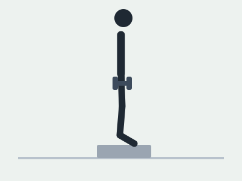

Подъём на носки

Подъём на носки стоя на степе. Тренирует икры.
Характеристики
- Основные мышцы: икроножные мышцы
- Снаряжение: гантели, степ
- Уровень: новичок
- Рекомендация: 3 подхода по 15–20 повторений
Техника выполнения
- Встань носками на край степа, пятки свисают.
- Возьми гантели в руки.
- Поднимись на носки как можно выше.
- Медленно опусти пятки ниже уровня степа.
Частые ошибки
- Слишком быстрые повторы.
- Неполная амплитуда.